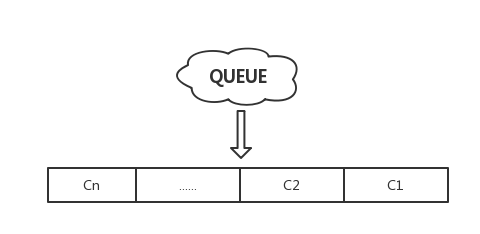

Redis 事物
1. Redis 事物 vs 数据库事物
说到 Redis 事物，肯定会联想到数据库的事物，先看一下数据库的事物执行流程和 Redis 的事物执行流程的异同，数据库以 MySQL 为例。
| MySQL | Redis
-------|-------------------|------ 开启事物| start transaction | multi 执行语句| 普通 SQL 语句 | 普通命令 失败情况| rollback 回滚 | discard 取消 成功情况| commit 提交 | exec 执行
2. Redis 事物的可靠性
数据库的事物具有 ACID 四个特性，即原子性（Atomicity）、一致性（Consistency）、隔离性（Isolation）、持久性（Durability）。Redis 是否有如上特性呢？
说到事物很多都会拿银行转账为案例，此处也不例外。也是一个银行转账的场景，即张三（原有500块钱）给李四（目前有200块钱）转 100 块钱。期望得到的结果是转账完成之后，张三 400块钱，李四 300 块钱。
数据库的情况在此就不多说了，主要看一下 Redis 如何失败回滚的情况。
场景一：输入了错误命令
127.0.0.1:6379> flushdb
127.0.0.1:6379> set zhangsan 500
127.0.0.1:6379> set lisi 200
127.0.0.1:6379> multi
OK
127.0.0.1:6379> decrby zhangsan 100
QUEUED
127.0.0.1:6379> dfasfasdfasd # 故意支持错误命令
(error) ERR unknown command `dfasfasdfasd`, with args beginning with:
127.0.0.1:6379> exec
(error) EXECABORT Transaction discarded because of previous errors
127.0.0.1:6379> mget zhangsan lisi
1) "500"
2) "200"
场景二：命令语法正确，但是执行错误
127.0.0.1:6379> flushdb
127.0.0.1:6379> set zhangsan 500
127.0.0.1:6379> set lisi 200
127.0.0.1:6379> multi
OK
127.0.0.1:6379> decrby zhangsan 100
QUEUED
127.0.0.1:6379> sadd lisi dog # 命令语法正确，但是执行错误
QUEUED
127.0.0.1:6379> exec
1) (integer) 400
2) (error) WRONGTYPE Operation against a key holding the wrong kind of value
127.0.0.1:6379> mget zhangsan lisi
1) "400"
2) "200"
由此可见，Redis 的事物并不能保证事物的原子性，Redis 的事物并不可靠。
3. Redis 事物的原理
Redis 开启事物之后，以后所有执行的命令都返回 QUEUED 则表示该命令并未执行而是存储到了某个队列里面，使用 Redis 单进程单线程的方式来实现事物。如图所示：

如果是执行 exec 命令则是一次性执行队列里面的命令，如果是 discard 则是将队列里面的命令清空。
综上所述：
Redis 并没有像数据库那样实现完整意义上的事物，如果是在强一致性的场景下，Redis 事物并不适合。